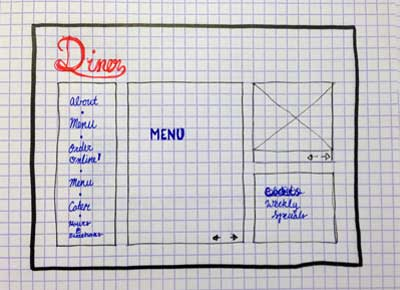
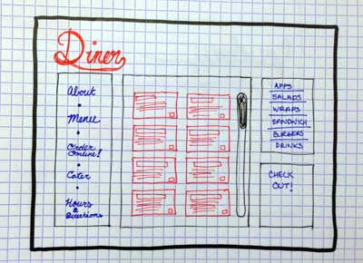
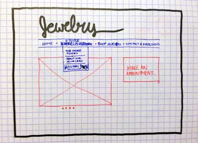
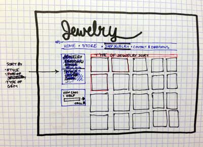

Diner


Pigla, 40, is the PTA President and wants an event catered to the school. After a brief Google search, she found this website. Pigla needs to order 40 wraps for this event and is scared of using phones. The website contains an easy to use order form where Pigla can specify her catering needs and pay without any human interaction.
Capone, 22, is a college student who has no time to wait for food. He needs a way to order online so when he goes to pick it up, the food is ready to go. This website has just that plus the option to order before and specify when it should be ready.
Rodrigo, 59, is a family man with 4 small children. The family is on vacation and he needs to know if this diner will have food his kids will eat at a price he can afford. The website will have both a regular and kids menu along with prices and specials. It also includes photos of the interior, in order to get the feel of the place.
Jewelry Store


Gertrude, 68, is an agoraphobic who wants to find something similar to her grandma's wedding ring she lost years ago. She had been referred to the website through an ad on AOL. Gertrude needs a website that is easy to use and has an online shopping tool. The site has a shopping section that is broken up by style, type of gem, and type of jewelry. It also includes a friendly computer assistant who can help with basic questions and directs users to the phone number if they need more.
Bruno, 28, is looking for an engagement ring for his fiancee-to-be. He was referred to the website through a friend and is browsing it on his tablet. He wants to know the history of a store, where they got the diamonds, store locations, hours, and directions as well as if he can make an appointment. The website has a tab for history and where they get their gems. It also has a button to make an appointment as well as contact any of the stores and get directions.
Maleficent, 43, took her daughter to the store to pick out a birthday present. The daughter found what she wanted but the matching earrings weren't in stock. She wants to see the earrings online and pick them up at the store. The website has an online shopping section as well as recommendations for similar jewelry.